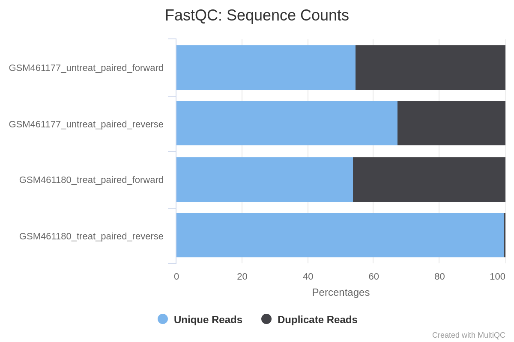
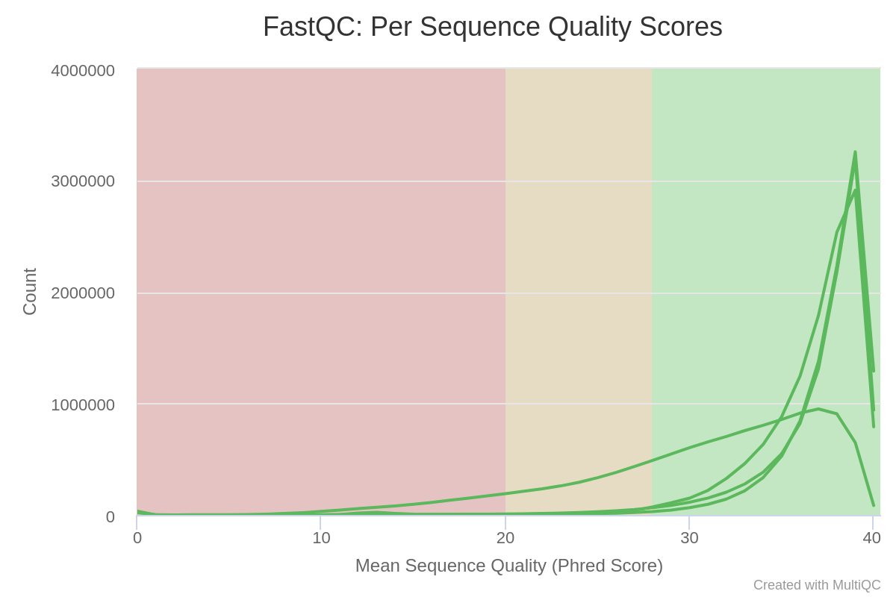
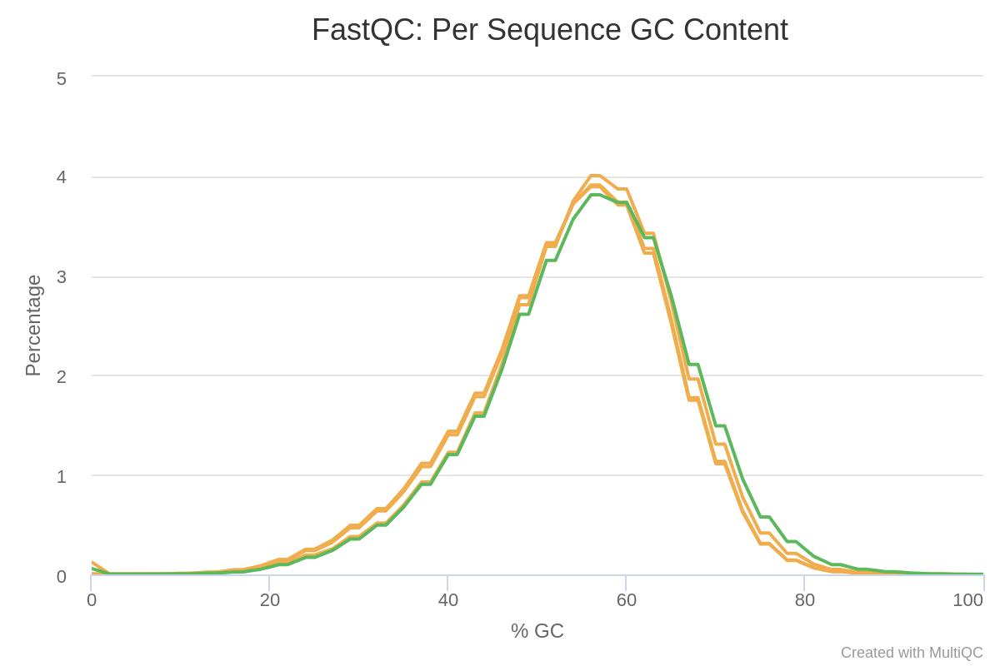
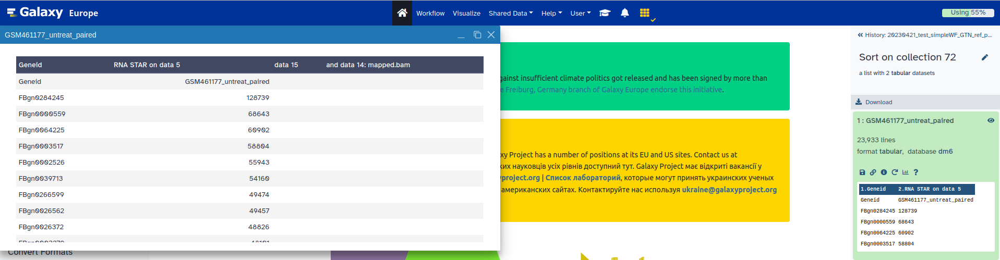
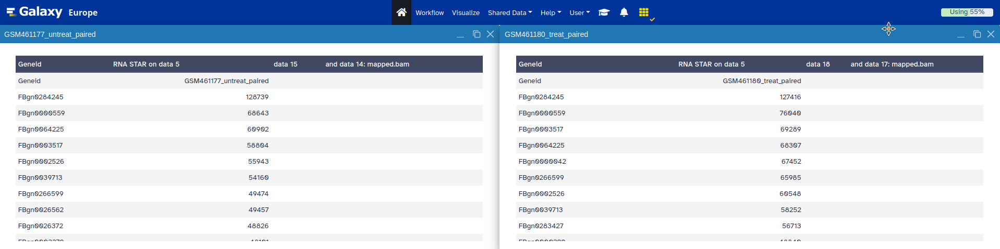

RNA-Seq is used to analyze the continuously changing cellular transcriptome, the set of all RNA molecules in one cell or a population of cells. Specifically, RNA-Seq facilitates the ability to look at alternative gene spliced transcripts, post-transcriptional modifications, gene fusion, mutations/SNPs and changes in gene expression over time, or differences in gene expression in different groups or treatments
In the study of Brooks et al. 2011, the authors wanted to identify exons regulated by the Pasilla gene (the Drosophila homologue of the mammalian splicing regulators Nova-1 and Nova-2 proteins) using RNA sequencing data. They depleted the Pasilla (PS) gene in Drosophila melanogaster by RNA interference (RNAi).
Total RNA was then isolated and used to prepare both single-end and paired-end RNA-seq libraries for treated (PS depleted) and untreated samples. These libraries were sequenced to obtain RNA-seq reads for each sample. The RNA-seq data for the treated and the untreated samples can be then compared to identify the effects of Pasilla gene depletion on splicing events.
In this tutorial, we will reproduce the analysis of the RNA-Seq data step by step.
The original data is available at NCBI Gene Expression Omnibus (GEO) under accession number GSE18508.
Each sample constitutes a separate biological replicate of the corresponding condition (treated or untreated). Moreover, two of the treated and two of the untreated samples are from a paired-end sequencing assay, while the remaining samples are from a single-end sequencing experiment.
The raw RNA-seq reads have been extracted from the Sequence Read Archive (SRA) files and converted into FASTQ files. In the first part of this tutorial we will use the files for 2 of the 7 samples, to demonstrate analysis of FASTQs. Optionally later you can import the FASTQs for the other 5 samples.
Open the Galaxy Upload Manager (galaxy-upload on the top-right of the tool panel)
Select Paste/Fetch Data
Paste the link into the text field
Press Start
Close the window
By default, Galaxy uses the URL as the name, so rename the files with a more useful name.
tip Tip: Importing data from a data library
As an alternative to uploading the data from a URL or your computer, the files may also have been made available from a shared data library:
Go into Shared data (top panel) then Data libraries
Find the correct folder (ask your instructor)
Select the desired files
Click on the To History button near the top and select as Datasets from the dropdown menu
In the pop-up window, select the history you want to import the files to (or create a new one)
Click on Import
comment Comment
Note that these are the full files for the samples and ~1.5Gb each so it may take some minutes to import.
For a quicker run-through of the FASTQ steps a small subset of each FASTQ file (~5Mb) can be found here https://zenodo.org/record/290221
Rename each dataset according to the sample id (e.g. GSM461177_1)
tip Tip: Renaming a dataset
Click on the galaxy-pencilpencil icon for the dataset to edit its attributes
In the central panel, change the Name field
Click the Save button
Check that the datatype is fastqsanger (e.g. notfastq). If it is not, please change the datatype to fastqsanger.
tip Tip: Changing the datatype
Click on the galaxy-pencilpencil icon for the dataset to edit its attributes
In the central panel, click on the galaxy-chart-select-dataDatatypes tab on the top
Select fastqsanger
Click the Change datatype button
Add to each database a tag corresponding to the name of the sample (#GSM461177 or #GSM461180)
tip Tip: Adding a tag
Click on the dataset
Click on galaxy-tagsEdit dataset tags
Add a tag starting with #
Tags starting with # will be automatically propagated to the outputs of tools using this dataset.
Check that the tag is appearing below the dataset name
question Questions
How are the DNA sequences stored?
What are the other entries of the file?
solution Solution
The DNA sequences are stored in a FASTQ file, in the second line of every 4-line group.
This file format is called FASTQ format. It stores sequence information and quality information. Each sequence is represented by a group of 4 lines with the 1st line being the sequence id, the second the sequence of nucleotides, the third a transition line and the last one a sequence of quality score for each nucleotide.
The reads are raw data from the sequencing machine without any pretreatments. They need to be assessed for their quality.
Quality control
During sequencing, errors are introduced, such as incorrect nucleotides being called. These are due to the technical limitations of each sequencing platform. Sequencing errors might bias the analysis and can lead to a misinterpretation of the data.
Sequence quality control is therefore an essential first step in your analysis. We will use similar tools as described in the “Quality control” training: FastQC and Cutadapt.
hands_on Hands-on: Quality control
FastQCtool with the following parameters:
param-files“Short read data from your current history”: input datasets selected with Multiple datasets
tip Tip: Select multiple datasets
Click on param-filesMultiple datasets
Select several files by keeping the Ctrl (or
COMMAND) key pressed and clicking on the files of interest
Inspect the webpage output of FastQCtool for the GSM461177 sample
question Questions
What is the read length?
solution Solution
The read length is 37 bp.
MultiQCtool with the following parameters to aggregate the FastQC reports:
In “Results”
“Which tool was used generate logs?”: FastQC
In “FastQC output”
“Type of FastQC output?”: Raw data
param-files“FastQC output”: Raw data files (output of FastQCtool)
Inspect the webpage output from MultiQC for each FASTQ
question Questions
What do you think of the quality of the sequences?
What should we do?
solution Solution
Everything seems OK for 3 of the files, but for GSM461180_2 the quality decreases quite a lot at the end of the sequences:
The GSM461177 have 10.3 millions of sequences and GSM461180 12.3 millions
All except GSM461180_2 have a high proportion of duplicated reads (expected in RNA-Seq data)
Figure 1: Sequence Counts
The “Per base sequence quality” is globally good with a slight decrease at the end of the sequences. For GSM461180_2, the decrease is quite large.
Figure 2: Sequence Quality
The mean quality score over the reads is quite high, but the distribution is slightly different for GSM461180_2
Figure 3: Per Sequence Quality Scores
Reads are not really following a normal distribution of GC content, except GSM461180_2
Figure 4: Per Sequence GC Content
Few N in the reads
Figure 5: Per base N content
Duplicated sequences: >10 to >500
Figure 6: Sequence Duplication Levels
Almost no known adapters and overrepresented sequences
If the quality of the reads is not good, we should:
Check what is wrong and think about it: it may come from the type of sequencing or what we sequenced (high quantity of overrepresented sequences in transcriptomics data, biaised percentage of bases in HiC data)
Ask the sequencing facility about it
Perform some quality treatment (in a reasonable way to not lose too much information) with some trimming or removal of bad reads
We should trim sequenced read to get rid of bases that were sequenced with high uncertainty (= low quality bases) at the read ends but also remove the reads of overall bad quality.
question Questions
What is the relation between GSM461177_1 and GSM461177_2 ?
solution Solution
The data has been sequenced using paired-end sequencing.
The paired-end sequencing is based on the idea that the initial DNA fragments (longer than the actual read length) is sequenced from both sides. This approach results in two reads per fragment, with the first read in forward orientation and the second read in reverse-complement orientation. The distance between both reads is known. Thus, it can be used as an additional piece of information to improve the read mapping.
With paired-end sequencing, each fragment is more covered than with single-end sequencing (only forward orientation sequenced):
One file with the sequences corresponding to forward orientation of all the fragments
One file with the sequences corresponding to reverse orientation of all the fragments
Here GSM461177_1 corresponds to the forward reads and GSM461177_2 to the reverse reads.
hands_on Hands-on: Quality control
Cutadapttool with the following parameters to trim low quality sequences:
“Single-end or Paired-end reads?”: Paired-end
param-files“FASTQ/A file #1”: both _1 fastqsanger datasets (multiple datasets)
param-files“FASTQ/A file #2”: both _2 fastqsanger datasets (multiple datasets)
The order is important here!
In “Filter Options”
“Minimum length”: 20
In “Read Modification Options”
“Quality cutoff”: 20
In “Output Options”
“Report”: Yes
question Questions
Why do we run the trimming tool only once on a paired-end dataset and not twice, once for each dataset?
solution Solution
The tool can remove sequences if they become too short during the trimming process. For paired-end files it removes entire sequence pairs if one (or both) of the two reads became shorter than the set length cutoff. Reads of a read-pair that are longer than a given threshold but for which the partner read has become too short can optionally be written out to single-end files. This ensures that the information of a read pair is not lost entirely if only one read is of good quality.
Inspect the generated txt files (Report)
question Questions
How many basepairs has been removed from the forwards reads because of bad quality? And from the reverse reads?
How many sequence pairs have been removed because at least one read was shorter than the length cutoff?
solution Solution
For GSM461177, 5,072,810 bp has been trimmed for the forward reads (read 1) and 8,648,619 bp on the reverse (read 2) because of quality. For GSM461180, 10,224,537 bp on forward and 51,746,850 bp on the reverse. It is not a surprise: we saw that at the end of the sequences the quality was dropping more for the reverse reads than for the forward reads, specially for GSM461180_2.
147,810 (1.4%) reads were too short for GSM461177 and 1,101,875 (9%) for GSM461180.
Mapping
To make sense of the reads, we need to first figure out where the sequenced DNA fragments originated from in the genome, so we can then determine to which genes they belong.
This process is known as aligning or ‘mapping’ the reads to a reference. This is equivalent to solving a jigsaw puzzle, but unfortunately, not all pieces are unique.
comment Comment
Do you want to learn more about the principles behind mapping? Follow our training.
As a reference genome for Drosophila melanogaster is available, we can map the sequences to this genome in order to identify which genes are affected by the Pasilla gene depletion.
question Questions
What is a reference genome?
For each model organism, several possible reference genomes may be available (e.g. hg19 and hg38 for human). What do they correspond to?
Which reference genome should we use?
solution Solution
A reference genome (or reference assembly) is a set of nucleic acid sequences assembled as a representative example of a species’ genetic material. As they are often assembled from the sequencing of different individuals, they do not accurately represent the set of genes of any single organism, but a mosaic of different nucleic acid sequences from each individual.
As the cost of DNA sequencing falls, and new full genome sequencing technologies emerge, more genome sequences continue to be generated. Using these new sequences, new alignments are builts and the reference genomes improved (fewer gaps, fixed misrepresentations in the sequence, etc). The different reference genomes correspond to the different released versions (called “builds”).
The genome of Drosophila melanogaster is known and assembled and it can be used as the reference genome in this analysis. Note that new versions of reference genomes may be released if the assembly improves, for this tutorial we are going to use the Release 6 of the Drosophila melanogaster reference genome assembly (dm6).
With eukaryotic transcriptomes most reads originate from processed mRNAs lacking introns, therefore they cannot be simply mapped back to the genome as we normally do for DNA data. Instead the reads must be separated into two categories:
Reads that can be mapped entirely within an exon
Reads spanning two or more exons
Figure 7: The five types of RNA-seq reads (Figure 1a from Kim et al, Nat Methods, 2015)
Spliced mappers have been developed to efficiently map transcript-derived reads against genomes:
Figure 8: Principle of spliced mappers: (1) identification of the reads spanning a single exon, (2) identification of the splicing junctions on the unmapped reads
details More details on the different spliced mappers
Several spliced mappers have been developed over the year with the explosion of RNA-seq data.
TopHat (Trapnell et al, Bioinformatics, 2009) was one of the first tools designed specifically to address this problem. In TopHat reads are mapped against the genome and are separated into two categories: (1) those that map, and (2) those that initially unmapped (IUM). “Piles” of reads representing potential exons are extended in search of potential donor/acceptor splice sites and potential splice junctions are reconstructed. IUMs are then mapped to these junctions.
Figure 9: TopHat (Trapnell et al, Bioinformatics, 2009)
Figure 10: TopHat2 (Kim et al, Genome Biology, 2013)
To further optimize and speed up spliced read alignment Kim et al (Nat Methods, 2015) developed HISAT. It uses a set of FM-indices consisting one global genome-wide index and a collection of ~48,000 local overlapping 42 kb indices (~55,000 56 kb indices in HISAT2). This allows to find initial seed locations for potential read alignments in the genome using global index and to rapidly refine these alignments using a corresponding local index:
Figure 11: Hierarchical Graph FM index in HiSat/HiSat2 (Kim et al, Nat Methods, 2015)
A part of the read (blue arrow) is first mapped to the genome using the global FM index. HISAT then tries to extend the alignment directly utilizing the genome sequence (violet arrow). In (a) it succeeds and this read is aligned as it completely resides within an exon. In (b) the extension hits a mismatch. Now HISAT takes advantage of the local FM index overlapping this location to find the appropriate mapping for the remainder of this read (green arrow). The (c) shows a combination these two strategies: the beginning of the read is mapped using global FM index (blue arrow), extended until it reaches the end of the exon (violet arrow), mapped using local FM index (green arrow) and extended again (violet arrow).
STAR aligner is a fast alternative for mapping RNA-seq reads against a reference genome utilizing an uncompressed suffix array. It operates in two stages Dobin et al, Bioinformatics, 2013. In the first stage it performs seed search:
Figure 12: STAR's seed search (Dobin et al, Bioinformatics, 2013)
Here a read is split between two consecutive exons. STAR starts to look for a maximum mappable prefix (MMP) from the beginning of the read until it can no longer match continuously. After this point it start to look for a MMP for the unmatched portion of the read (a). In the case of mismatches (b) and unalignable regions (c) MMPs serve as anchors from which to extend alignments</p>
At the second stage STAR stitches MMPs to generate read-level alignments that (contrary to MMPs) can contain mismatches and indels. A scoring scheme is used to evaluate and prioritize stitching combinations and to evaluate reads that map to multiple locations. STAR is extremely fast but requires a substantial amount of RAM to run efficiently.
Mapping
We will map our RNA reads to the Drosophila melanogaster genome using STAR.
hands_on Hands-on: Spliced mapping
Import the Ensembl gene annotation for Drosophila melanogaster (Drosophila_melanogaster.BDGP6.87.gtf) from the Shared Data library if available or from Zenodo into your current Galaxy history
param-file“Gene model (gff3,gtf) file for splice junctions”: the imported Drosophila_melanogaster.BDGP6.87.gtf
“Length of the genomic sequence around annotated junctions”: 36
This parameter should be length of reads - 1
MultiQCtool to aggregate the STAR logs:
In “Results”
“Which tool was used generate logs?”: STAR
In “STAR output”
“Type of STAR output?”: Log
param-files“STAR output”: log files (output of RNA STARtool)
question Question
What percentage of reads mapped exactly once for both samples?
What are the other available statistics?
solution Solution
More than 83% for GSM461177 and more than 79% for GSM461180
We also have access to the number and percentage of reads that are mapped at several location, mapped at too many different location, not mapped because too short.
Figure 13: Alignment scores
We could have been probably more strict in the minimal read length to avoid these unmapped reads because of length.
STAR generates a BAM file with the mapped reads.
A BAM (Binary Alignment Map) file is a compressed, binary file storing the sequences mapped to a reference sequence.
hands_on Hands-on: Inspect a BAM/SAM file
Inspect the param-file output of RNA STARtool
A BAM file (or a SAM file, the non compressed version) consists of:
A header section (the lines starting with @) containing metadata, in particular the chromosome names and lengths (lines starting with the @SQ symbol)
An alignment section consisting of a table with 11 mandatory fields, as well as a variable number of optional fields:
Col
Field
Type
Brief Description
1
QNAME
String
Query template NAME
2
FLAG
Integer
bitwise FLAG
3
RNAME
String
References sequence NAME
4
POS
Integer
1- based leftmost mapping POSition
5
MAPQ
Integer
MAPping Quality
6
CIGAR
String
CIGAR String
7
RNEXT
String
Ref. name of the mate/next read
8
PNEXT
Integer
Position of the mate/next read
9
TLEN
Integer
observed Template LENgth
10
SEQ
String
segment SEQuence
11
QUAL
String
ASCII of Phred-scaled base QUALity+33
question Questions
Which information do you find in a SAM/BAM file?
What is the additional information compared to a FASTQ file?
solution Solution
Sequences and quality information, like a FASTQ
Mapping information, Location of the read on the chromosome, Mapping quality, etc
question Question
What is a BAM file?
What does such a file contain?
solution Solution
A Binary Alignment Map (BAM) file is the compressed version of a Sequence Alignment Map (SAM) file. A SAM file is a tab-delimited text file that contains sequence alignment data.
It contains information about the mapping: for each mapped read, the position on the reference genome, the mapping quality, …
Inspection of the mapping results
The BAM file contains information about where the reads are mapped on the reference genome. But as it is a binary file containing information for many reads (several million for these samples), it is difficult to inspect and explore the file.
A powerful tool to visualize the content of BAM files is the Integrative Genomics Viewer (IGV).
Expand the param-filemapped.bam file (output of RNA STARtool) for GSM461177
Click on the local in display with IGV to load the reads into the IGV browser
comment Comments
In order for this step to work, you will need to have either IGV or Java web start
installed on your machine. However, the questions in this section can also be answered by inspecting the IGV screenshots below.
IGVtool: Zoom to chr4:540,000-560,000 (Chromosome 4 between 540 kb to 560 kb)
question Question
Figure 14: Screenshot of IGV on Chromosome 4
What information appears at the top as grey peaks?
What do the connecting lines between some of the aligned reads indicate?
solution Solution
The coverage plot: the sum of mapped reads at each position
They indicate junction events (or splice sites), i.e. reads that are mapped across an intron
IGVtool: Inspect the splice junctions using a Sashimi plot
comment Creation of a Sashimi plot
Right click on the BAM file (in IGV)
Select Sashimi Plot from the menu
question Question
Figure 15: Screenshot of a Sashimi plot of Chromosome 4
What does the vertical red bar graph represent? And the arcs with numbers?
What do the numbers on the arcs mean?
Why do we observe different stacked groups of blue linked boxes at the bottom?
solution Solution
The coverage for each alignment track is plotted as a red bar graph. Arcs represent observed splice junctions, i.e., reads spanning introns
The numbers refer to the number of observed junction reads.
The different groups of linked boxes on the bottom represent the different transcripts from the genes at this location, that are present in the GTF file.
After the mapping, we have the information on where the reads are located on the reference genome. We also know how well they were mapped. The next step in RNA-Seq data analysis is quantification of the number of reads mapped to genomic features (genes, transcripts, exons, …).
comment Comment
The quantification depends on both the reference genome (the FASTA file) and its associated annotations (the GTF file). It is extremely important to use an annotation file that corresponds to the same version of the reference genome you used for the mapping (e.g. dm6 here), as the chromosomal coordinates of genes are usually different amongst different reference genome versions.
In order to identify exons that are regulated by the Pasilla gene, we need to identify genes and exons which are differentially expressed between samples with PS gene depletion (treated) and control (untreated) samples.
We will then analyze the differential gene expression and also the differential exon usage.
Analysis of the differential gene expression
We will first investigate the differential gene expression to identify which genes are impacted by the Pasilla gene depletion.
Count the number of reads per annotated gene
To compare the expression of single genes between different conditions (e.g. with or without PS depletion), an essential first step is to quantify the number of reads per gene.
Figure 16: Counting the number of reads per annotated gene
question Question
In the previous image,
How many reads are found for the different exons?
How many reads are found for the different genes?
solution Solution
Number of reads per exons
Exon
Number of reads
gene1 - exon1
3
gene1 - exon2
2
gene2 - exon1
3
gene2 - exon2
4
gene2 - exon3
3
The gene1 has 4 reads, not 5 (gene1 - exon1 + gene1 - exon2) because of the splicing of the last read. Gene2: 6 (3 spliced reads)
In principle, the counting of reads overlapping with genomic features is a fairly simple task. But there are some details that need to be given to featureCounts: for example the strandness.
Estimation of the strandness
RNAs that are typically targeted in RNA-seq experiments are single stranded (e.g., mRNAs) and thus have polarity (5’ and 3’ ends that are functionally distinct):
Figure 17: Relationship between DNA and RNA orientation
During a typical RNA-seq experiment the information about strandedness is lost after both strands of cDNA are synthesized, size selected, and converted into a sequencing library. However, this information can be quite useful for the read counting.
Some library preparation protocols create so called stranded RNA-seq libraries that preserve the strand information (an excellent overview in Levin et al, Nat Meth, 2010). The implication of stranded RNA-seq is that you can distinguish whether the reads are derived from forward or reverse-encoded transcripts:
Figure 18: Non-stranded vs. strand-specific RNA-seq read alignment (image from GATC Biotech)
Depending on the approach, and whether one performs single-end or paired-end sequencing, there are multiple possibilities on how to interpret the results of the mapping of these reads to the genome:
Figure 19: Effects of RNA-seq library types (adapted from Sailfish documentation)
In practice, with Illumina paired-end RNA-seq protocols you are unlikely to encounter many of these possibilities. You will most likely deal with either:
Unstranded RNAseq data
Stranded RNA-seq data produced with - kits and dUTP tagging (ISR)
This information should be provided with your FASTQ files, ask your sequencing facility! If not, try to find it on the site where you downloaded the data or in the corresponding publication.
Another option is to estimate these parameters with a tool called Infer Experiment from the RSeQC tool suite. This tool takes the output of your mappings (BAM files), selects a subsample of your reads and compares their genome coordinates and strands with those of the reference gene model (from an annotation file). Based on the strand of the genes, it can gauge whether sequencing is strand-specific, and if so, how reads are stranded.
hands_on Hands-on: Determining the library strandness
Convert GTF to BED12tool to convert the GTF file to BED:
param-file“GTF File to convert”: Drosophila_melanogaster.BDGP6.87.gtf
Infer Experimenttool to determine the library strandness with:
param-files“Input .bam file”: mapped.bam files (outputs of RNA STARtool)
param-file“Reference gene model”: BED12 file (output Convert GTF to BED12tool)
“Number of reads sampled from SAM/BAM file (default = 200000)”: 200000
Infer Experimenttool tool generates one file with information on:
Paired-end or single-end library
Fraction of reads failed to determine
2 lines
For single-end
Fraction of reads explained by “++,–” (SF in previous figure)
Fraction of reads explained by “+-,-+” (SR in previous figure)
For paired-end
Fraction of reads explained by “1++,1–,2+-,2-+” (SF in previous figure)
Fraction of reads explained by “1+-,1-+,2++,2–” (SR in previous figure)
If the two “Fraction of reads explained by” numbers are close to each other, we conclude that the library is not a strand-specific dataset (U in previous figure).
question Question
What are the “Fraction of the reads explained by” results for GSM461177?
Do you think the library type of the 2 samples is stranded or unstranded?
solution Solution
Results for GSM46177:
This is PairEnd Data
Fraction of reads failed to determine: 0.0963
Fraction of reads explained by "1++,1--,2+-,2-+": 0.4649
Fraction of reads explained by "1+-,1-+,2++,2--": 0.4388
so 46.46% of the reads are SF and 43.88% SR.
Similar statistics are found for GSM461180, so the library seems to be of the type unstranded for both samples.
comment Comment
As it is sometimes quite difficult to find out which settings correspond to those of other programs, the following table might be helpful to identify the library type:
Library type
Infer Experiment
TopHat
HISAT2
htseq-count
featureCounts
Paired-End (PE) - SF
1++,1–,2+-,2-+
FR Second Strand
Second Strand F/FR
yes
Forward (1)
PE - SR
1+-,1-+,2++,2–
FR First Strand
First Strand R/RF
reverse
Reverse (2)
Single-End (SE) - SF
++,–
FR Second Strand
Second Strand F/FR
yes
Forward (1)
SE - SR
+-,-+
FR First Strand
First Strand R/RF
reverse
Reverse (2)
PE, SE - U
undecided
FR Unstranded
default
no
Unstranded (0)
Counting
We now run featureCounts to count the number of reads per annotated gene.
hands_on Hands-on: Counting the number of reads per annotated gene
featureCountstool to count the number of reads per gene:
param-files“Alignment file”: mapped.bam files (outputs of RNA STARtool)
“Count fragments instead of reads”: Enabled; fragments (or templates) will be counted instead of reads
In “Advanced options”:
“GFF feature type filter”: exon
“GFF gene identifier”: gene_id
“Allow read to contribute to multiple features”: No
“Count multi-mapping reads/fragments”: Disabled; multi-mapping reads are excluded (default)
“Minimum mapping quality per read”: 10
MultiQCtool to aggregate the report:
In “Results”:
“Which tool was used generate logs?”: featureCounts
param-files“Output of FeatureCounts”: summary files (outputs of featureCountstool)
question Question
How many reads have been assigned to a gene?
When should we be worried about the assignment rate? What should we do?
solution Solution
Around 70% of the reads have been assigned to genes: this quantity is good enough.
Figure 20: Assignments with featureCounts
Some reads are not assigned because multi-mapped and other assigned to no features or ambiguous ones.
If the percentage is below 50%, you should investigate where your reads are mapping (inside genes or not, with IGV) and check that the annotation corresponds to the correct reference genome version.
The feature length output datasets generated by featureCounts will be needed later on when we will run the goseq tool.
The main output of featureCounts is a table.
question Question
What information does the generated table contain?
Which feature has the most counts for both samples? (Hint: Use the Sort tool)
solution Solution
The table has two columns: the gene id and the number of reads (or fragments in the case of paired-end reads) mapped to the gene
To display the most abundantly detected feature, we need to sort the table of counts. This can be done using the Sorttool tool, by sorting the table on the second column in descending order. This reveals that FBgn0000556 is the feature with the most counts (around 128,741 in GSM461177 and 127,416 in GSM461180).
Viewing datasets side by side using the Scratchbook
Comparing output is easier if we can view more than one dataset simultaneously. The Scratchbook allows us to build
up a collection of datasets that will be shown on the screen together.
hands_on (Optional) View the sorted featureCounts using the Scratchbook
The Scratchbook is enabled by clicking the nine-blocks icon seen on the right of the Galaxy top menubar:
Figure 21: Menu bar with Scratchbook icon
When the Scratchbook is enabled datasets being viewed are added to the Scratchbook:
Figure 22: Menu bar with Scratchbook icon enabled
Click the galaxy-eye (eye) icon to view one of the sorted featureCounts. Instead of occupying the entire middle bar the dataset view is now shown an overlay:
Figure 23: Scratchbook showing one dataset overlay
When a dataset is shown click in the main interface to prepare to select another dataset. The interface now shows that there is one saved view in the Scratchbook:
Figure 24: Menu bar with one saved dataset view in Scratchbook
Next click the galaxy-eye (eye) icon on the second sorted featureCounts. The two datasets can now be seen side by side:
Figure 25: Scratchbook showing two side by side datasets
To leave Scratchbook selection mode, click on the Scratchbook icon again. Your saved view will still remain for future viewing:
Figure 26: Scratchbook disabled with two datasets saved
Identification of the differentially expressed features
In the previous section, we counted reads mapped to genes for two samples. To be able to identify differential gene expression induced by PS depletion, all datasets (3 treated and 4 untreated) must be analyzed following the same procedure.
hands_on (Optional) Hands-on: Re-run on the other datasets
You can do the same process on the other sequence files available on Zenodo
This is really interesting to redo on the other datasets, especially to check how parameters differ given the different type of data (single-end versus paired-end).
To save time, we have run the necessary steps for you and generated 7 count files, available on Zenodo.
These files contain the counts for each gene of Drosophila. We could compare the files directly and calculate the extent of differential gene expression, but the number of sequenced reads mapped to a gene depends on:
The gene’s expression level
The gene’s length
The sequencing depth of the sample
The expression of all other genes within the sample
For both within or between-sample comparison, the gene counts need to be normalized. We can then perform the Differential Gene Expression (DGE) analysis, whose two basic tasks are:
Estimate the biological variance using the replicates for each condition
Estimate the significance of expression differences between any two conditions
This expression analysis is estimated from read counts and attempts are made to correct for variability in measurements using replicates, that are absolutely essential for accurate results. For your own analysis, we advise you to use at least 3, but preferably 5 biological replicates per condition. It is possible to have different number of replicates per condition.
DESeq2 is a great tool for DGE analysis. It takes read counts and combines them into a big table (with genes in the rows and samples in the columns) and applies size factor normalization:
Computation for each gene of the geometric mean of read counts across all samples
Division of every gene count by the geometric mean
Use of the median of these ratios as a sample’s size factor for normalization
Multiple factors with several levels can then be incorporated in the analysis. After normalization we can compare the response of the expression of any gene to the presence of different levels of a factor in a statistically reliable way.
In our example, we have samples with two varying factors that can contribute to differences in gene expression:
Treatment (either treated or untreated)
Sequencing type (paired-end or single-end)
Here, treatment is the primary factor that we are interested in. The sequencing type is further information we know about the data that might affect the analysis. Multi-factor analysis allows us to assess the effect of the treatment, while taking the sequencing type into account too.
comment Comment
We recommend that you add as many factors as you think may affect gene expression in your experiment. It can be the sequencing type like here, but it can also be the manipulation (if different persons are involved in the library preparation), other batch effects, etc…
hands_on Hands-on: Determine differentially expressed features
Create a new history
Import the seven count files from Zenodo or the Shared Data library (if available):
param-files“Counts file(s)”: the 3 gene count files with treat in their name
In “2: Factor level”:
“Specify a factor level”: untreated
param-files“Counts file(s)”: the 4 gene count files with untreat in their name
Click on “Insert Factor” (not on “Insert Factor level”)
In “2: Factor”
“Specify a factor name” to Sequencing
In “Factor level”:
In “1: Factor level”:
“Specify a factor level”: PE
param-files“Counts file(s)”: the 4 gene count files with paired in their name
In “2: Factor level”:
“Specify a factor level”: SE
param-files“Counts file(s)”: the 3 gene count files with single in their name
“Files have header?”: No
“Output normalized counts table”: Yes
tip Tip: Select multiple datasets
Click on param-filesMultiple datasets
Select several files by keeping the Ctrl (or
COMMAND) key pressed and clicking on the files of interest
comment Comment: Using group tags for large sample sets
If you have a large number of samples, or a complex experimental design, manually selecting files for each factor level
may be a lot of work. In these situations, group tags can make your life a lot easier.
For more information about setting and using group tags, please see this tutorial
DESeq2 generated 3 outputs
A table with the normalized counts for each gene (rows) in the samples (columns)
A graphical summary of the results, useful to evaluate the quality of the experiment:
Histogram of p-values for all tests
MA plot: global view of the relationship between the expression change of conditions (log ratios, M), the average expression strength of the genes (average mean, A), and the ability of the algorithm to detect differential gene expression. The genes that passed the significance threshold (adjusted p-value < 0.1) are colored in red.
Principal component plot of the samples (PCA) with the first two dimensions.
It shows the samples in the 2D plane spanned by their first two principal components. Each replicate is plotted as an individual data point. This type of plot is useful for visualizing the overall effect of experimental covariates and batch effects.
question Questions
Figure 27: Principal component plot of the samples
What is the first dimension (PC1) separating?
And the second dimension (PC2)?
What can we conclude about the DESeq design (factors, levels) we choose?
solution Solution
The first dimension is separating the treated samples from the untreated sample
The second dimension is separating the single-end datasets from the paired-end datasets
The datasets are grouped following the levels of the two factors. No hidden effect seems to be present on the data. If there is unwanted variation present in the data (e.g. batch effects) it is always recommend to correct for this, which can be accommodated in DESeq2 by including in the design any known batch variables
Heatmap of the sample-to-sample distance matrix (with clustering): overview over similarities and dissimilarities between samples
question Questions
Figure 28: Heatmap of the sample-to-sample distances
How are the samples grouped?
solution Solution
They are first grouped by the treatment (the first factor) and secondly by the library type (the second factor), as in the PCA plot.
Dispersion estimates: gene-wise estimates (black), the fitted values (red), and the final maximum a posteriori estimates used in testing (blue)
This dispersion plot is typical, with the final estimates shrunk from the gene-wise estimates towards the fitted estimates. Some gene-wise estimates are flagged as outliers and not shrunk towards the fitted value. The amount of shrinkage can be more or less than seen here, depending on the sample size, the number of coefficients, the row mean and the variability of the gene-wise estimates.
A summary file with the following values for each gene
Gene identifiers
Mean normalized counts, averaged over all samples from both conditions
Fold change in log2 (logarithm base 2)
The log2 fold changes are based on the primary factor level 1 vs. factor level 2, hence the input order of factor levels is important. For example, for the factor ‘Treatment’, DESeq2 computes fold changes of ‘treated’ samples against ‘untreated’, i.e. the values correspond to up- or downregulation of genes in treated samples.
Standard error estimate for the log2 fold change estimate
p-value for the statistical significance of this change
p-value adjusted for multiple testing with the Benjamini-Hochberg procedure, which controls false discovery rate (FDR)
comment Comment
For more information about DESeq2 and its outputs, you can have a look at DESeq2 documentation.
For more complex setup, e.g. with many samples, it is possible to use a collection with tags to specify the factors and levels. Check our “Group tags for complex experimental designs” tutorial, explaining how to do that.
Visualization of the differentially expressed genes
Now we would like to extract the most differentially expressed genes due to the treatment, and then visualize them using an heatmap of the normalized counts and also the z-score for each sample.
We proceed in several steps:
Extract the most differentially expressed genes using the DESeq2 summary file
Extract the normalized counts for these genes for each sample, using the normalized count file generated by DESeq2
Plot the heatmap of the normalized counts
Compute the Z score of the normalized counts
Plot the heatmap of the Z score of the genes
hands_on Hands-on: Extract the most differentially expressed genes
Filter (data on any column using simple expressions) tool to extract genes with a significant change in gene expression (adjusted p-value below 0.05) between treated and untreated samples:
param-file“Filter”: the DESeq2 result file
“With following condition”: c7<0.05
question Question
How many genes have a significant change in gene expression between these conditions?
solution Solution
We get 1,091 genes (6.21%) with a significant change in gene expression between treated and untreated samples.
comment Comment
The file with the independent filtered results can be used for further downstream analysis as it excludes genes with only few read counts as these genes will not be considered as significantly differentially expressed.
The generated file contains too many genes to get a meaningful heatmap. So we will take only the genes with an absolute fold change > 2
Filtertool to extract genes with an (FC stands for “fold change”):
param-file“Filter”: the differentially expressed genes (output of Filtertool)
“With following condition”: abs(c3)>1
question Question
How many genes have been conserved?
solution Solution
130, the 11.92% of the significantly differentially expressed genes.
We now have a table with 130 lines corresponding to the most differentially expressed genes. And for each of the gene, we have its id, its mean normalized counts (averaged over all samples from both conditions), its and other information.
We could plot the for the different genes, but here we would like to look at a heatmap of expression for these genes in the different samples. So we need to extract the normalized counts for these genes.
We will join the normalized count table generated by DESeq with the table we just generated, to conserve only the lines corresponding to the most differentially expressed genes.
hands_on Hands-on: Extract the normalized counts of the most differentially expressed genes
Create a Pasted Entry from the header line of the Filter output:
Copy the header of the final Filter output
Using the Upload tool select Paste/Fetch data and paste the copied data
Set the Type to tabular and select Start to upload a new Pasted Entry
Concatenate datasetstool to add this header line to the Filter output:
param-file select the Pasted entry dataset
+ Insert Dataset
param-file select the final Filter output
This ensures that the table of most differentially expressed genes has a header line and can be used in the next step.
Join two Datasetstool with the following parameters:
param-file“Join”: the Normalized counts file (output of DESeq2tool)
“using column”: Column: 1
param-file“with”: most differentially expressed genes (output of the Concatenatetool tool)
“and column”: Column: 1
“Keep lines of first input that do not join with second input”: No
“Keep the header lines”: Yes
The generated file has more columns than we need for the heatmap. In addition to the columns with mean normalized counts, there is the and other information. We need to remove the extra columns.
Cuttool to extract the columns with the gene ids and normalized counts:
“Cut columns”: c1-c8
“Delimited by”: Tab
param-file“From”: the joined dataset (output of Join two Datasetstool)
We now have a table with 130 lines (the most differentially expressed genes) and the normalized counts for these genes in the 7 samples.
hands_on Hands-on: Plot the heatmap of the normalized counts of these genes for the samples
heatmap2tool to plot the heatmap:
param-file“Input should have column headers”: the generated table (output of Cuttool)
“Advanced - log transformation”/“Data transformation”: Log2(value) transform my data
“Enable data clustering”: Yes
“Labeling columns and rows”: Label columns and not rows
“Coloring groups”: Blue to white to red
You should obtain something similar to:
Figure 29: Normalized counts for the most differentially expressed genes
question Questions
Do you observe anything in the clustering of the samples and the genes?
What changes if you regenerate the heatmap and select Plot the data as it is in “Advanced - log transformation”/“Data transformation”?
How could you generate a heatmap of normalized counts for all up-regulated genes with absolute fold change > 2?
solution Solution
The samples are clustering by treatment.
The scale changes and the differences between the genes are not visible anymore.
Extract the genes with ) > 1 (filter for genes with abs(c3)>1 on the summary of the differentially expressed genes) and run heatmap2tool on the generated table.
Analysis of functional enrichment among the differentially expressed genes
We have extracted genes that are differentially expressed in treated (PS gene-depleted) samples compared to untreated samples. We would like to know if there are categories of genes that are enriched among the differentially expressed genes.
Gene Ontology (GO) analysis is widely used to reduce complexity and highlight biological processes in genome-wide expression studies. However, standard methods give biased results on RNA-seq data due to over-detection of differential expression for long and highly-expressed transcripts.
The goseq tool provides methods for performing GO analysis of RNA-seq data, taking length bias into account. The methods and software used by goseq are equally applicable to other category based tests of RNA-seq data, such as KEGG pathway analysis.
goseq needs 2 files as inputs:
A tabular file with the differentially expressed genes from all genes assayed in the RNA-seq experiment with 2 columns:
the Gene IDs (unique within the file)
True (differentially expressed) or False (not differentially expressed)
A file with information about the length of a gene to correct for potential length bias in differentially expressed genes
hands_on Hands-on: Prepare the datasets for GOSeq
Computetool with
“Add expression”: bool(c7<0.05)
param-file“as a new column to”: the DESeq2 result file
Cuttool with
“Cut columns”: c1,c8
“Delimited by”: Tab
param-file“From”: the output of the Computetool
Change Casetool with
param-file“From”: the output of the previous Cuttool
“Change case of columns”: c1
“Delimited by”: Tab
“To”: Upper case
We just generated the first input for goseq. We need as second input for goseq, the gene lengths. We can use there the gene length generated by featureCountstool and reformat it a bit.
Change Casetool with
param-file“From”: the feature lengths (output of featureCountstool)
“Change case of columns”: c1
“Delimited by”: Tab
“To”: Upper case
We have now the two required input files for goseq.
hands_on Hands-on: Perform GO analysis
goseqtool with
“Differentially expressed genes file”: first file generated by Change Casetool on previous step
“Gene lengths file”: second file generated by Change Casetool on previous step
“Gene categories”: Get categories
“Select a genome to use”: Fruit fly (dm6)
“Select Gene ID format”: Ensembl Gene ID
“Select one or more categories”: GO: Cellular Component, GO: Biological Process, GO: Molecular Function
goseq generates a big table with the following columns for each GO term:
category: GO category
over_rep_pval: p-value for over representation of the term in the differentially expressed genes
under_rep_pval: p-value for under representation of the term in the differentially expressed genes
numDEInCat: number of differentially expressed genes in this category
numInCat: number of genes in this category
term: detail of the term
ontology: MF (Molecular Function - molecular activities of gene products), CC (Cellular Component - where gene products are active), BP (Biological Process - pathways and larger processes made up of the activities of multiple gene products)
p.adjust.over_represented: p-value for over representation of the term in the differentially expressed genes, adjusted for multiple testing with the Benjamini-Hochberg procedure
p.adjust.under_represented: p-value for over representation of the term in the differentially expressed genes, adjusted for multiple testing with the Benjamini-Hochberg procedure
To identify categories significantly enriched/unenriched below some p-value cutoff, it is necessary to use the adjusted p-value.
question Questions
How many GO terms are over-represented at adjusted P value < 0.05? Under-represented?
How are the over-represented GO terms divided between MF, CC and BP? And for under-represented GO terms?
solution Solution
29 GO terms (0.25%) are over-represented and 81 (0.71%) - Filter on c8 (over-represented) and c9 (under-represented)
For over-represented, 21 BP, 4 CC and 4 MF - For under-represented, 45 BP, 30 CC and 6 MF - Group data on column 7 and count on column 1
Conclusion
In this tutorial, we have analyzed real RNA sequencing data to extract useful information, such as which genes are up or downregulated by depletion of the Pasilla gene and which genes are regulated by the Pasilla gene. To answer these questions, we analyzed RNA sequence datasets using a reference-based RNA-seq data analysis approach. This approach can be summarized with the following scheme:
Figure 30: Summary of the analysis pipeline used
keypoints Key points
A spliced mapping tool should be used on eukaryotic RNA seq data
Numerous factors should be taken into account when running a differential gene expression
Useful literature
Further information, including links to documentation and original publications, regarding the tools, analysis techniques and the interpretation of results described in this tutorial can be found here.
congratulations Congratulations on successfully completing this tutorial!
feedback Give us even more feedback on this content!
To give us more detailed feedback about these materials, please take a moment to fill in the extended Feedback Form.
 Bérénice Batut,
Bérénice Batut,  Mallory Freeberg,
Mallory Freeberg,  Mo Heydarian,
Mo Heydarian,  Anika Erxleben,
Anika Erxleben,  Pavankumar Videm,
Pavankumar Videm,  Clemens Blank,
Clemens Blank,  Maria Doyle,
Maria Doyle,  Nicola Soranzo,
Nicola Soranzo,  Peter van Heusden
Peter van Heusden